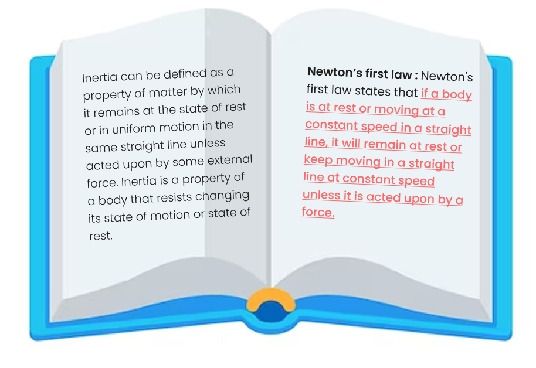
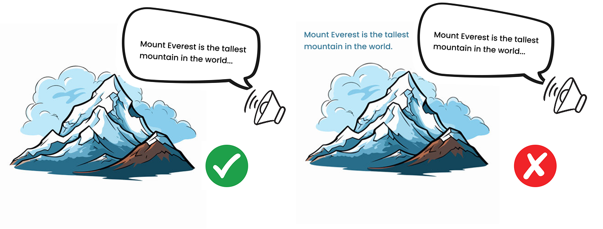

Blog
Richard Mayer’s multimedia learning theory is a must-read for instructional designers, eLearning developers and L&D professionals everywhere. Mayer’s principles of multimedia learning provide a blueprint for how to structure multimedia elements to maximise learning outcomes.
A distinguished professor of psychology at the University of California, Mayer published his cognitive theory of multimedia learning in 2001. And the principles he developed after several years of research are just as relevant today. From images and video to AR and VR, multimedia is now integral to digital education. And learners find it a more engaging and enjoyable way to learn. According to one survey, 70% of students prefer digital learning to traditional classrooms.
Mayer’s multimedia learning theory is based on three assumptions:
Dual-channel assumption: According to Mayer, people have two separate channels for processing auditory and visual information.
Limited-capacity assumption: The theory recognises that individuals have a limited ability to absorb information at any one time.
Active-processing assumption: The multimedia learning theory suggests that people should be actively engaged in the learning process rather than passive receivers of information.
From these assumptions, Mayer goes on to identify 12 principles of multimedia learning. And these principles provide an invaluable checklist for designers wanting to optimise learning with multimedia.

What are Mayer’s 12 principles of multimedia learning?
The principles are grounded in cognitive science and how people process information. They provide a checklist on how to structure multimedia learning experiences.
Tick off the following principles as you design your program to ensure you maximise learner comprehension, improve retention and enhance the learning outcomes.
- Multimedia Principle–Use words and visuals together for better learning.
- Coherence Principle–Eliminate unnecessary content to avoid distraction.
- Signalling Principle–Highlight key information using cues.
- Redundancy Principle–Don’t narrate text on screen while showing visuals.
- Spatial Contiguity Principle–Place related text and visuals close together.
- Temporal Contiguity Principle–Present related words and visuals simultaneously.
- Segmenting Principle–Break content into smaller, digestible chunks.
- Pre-training Principle–Provide basic knowledge before complex topics.
- Modality Principle–Use narration instead of on-screen text with visuals.
- Voice Principle–Use a human voice for narration.
- Personalisation Principle–Use conversational language for better engagement.
- Image Principle–Avoid using the instructor’s image unless necessary.
1. Multimedia Principle: Use words and visuals together for better learning
This principle states that people learn more effectively when both verbal and visual representations of content are used simultaneously. Visuals help to support the verbal explanation by engaging learners in dual processing.
How can we apply the multimedia principle?- Use a mix of text and images.
- Incorporate visuals to illustrate key points in the eLearning program.
- Instead of using images for the sake of it, double-check that the visuals clarify meaning or enhance comprehension.
Example:
2. Coherence Principle: Eliminate unnecessary content to avoid distraction.
This principle encourages removing extraneous material such as irrelevant images, sounds, or texts that don’t contribute directly to the learning objectives. By doing this, cognitive load is reduced, allowing learners to focus only on the essential material.
How can we apply the coherence principle?- Only include graphics, text or narratives if they are on point and support the learning goals.
- Avoid using background music.
- Use simple diagrams and infographics.
Example:
3. Signaling Principle: Highlight key information using cues.
To help learners focus on important content, cues such as arrows, highlighting, or bold text are used to guide attention to critical elements of the lesson. Signaling helps learners differentiate essential information from less important content.
How can we apply the signaling principle?
- Emphasis key points with arrows, callouts, highlights or bold text.
Example:

4. Redundancy Principle: Don't narrate text on screen while showing visuals.
Presenting the same information in multiple forms—like using narration while displaying the same text on-screen—creates cognitive overload. The learner has to split attention between reading the text and listening to the narration, which can negatively impact comprehension.
How can we apply the redundancy principle?
- Use either graphics or text to complement spoken presentations. Never use both at the same time.
- Minimize the use of on-screen text in narrated presentations. Instead, focus on images or graphics.
Example :

5. Spatial Contiguity Principle: Place related text and visuals close together.
This principle suggests that text explaining an image or diagram should be placed near the related visual to reduce the mental effort required to connect the two. The closer the text is to the image, the easier it is for learners to associate the two and understand the material.
How can we apply the spatial contiguity principle?
- Keep text and visuals close to each other in the frame.
- Place any feedback next to the relevant questions or answers.
- Ensure directions are presented on the same screen as an activity.
Example :
6. Temporal Contiguity Principle: Present related words and visuals simultaneously.
When words and images are presented at the same time, learners can better understand the relationship between them. Delaying either the text or the visual makes it harder for learners to integrate the information.
How can we apply the temporal contiguity principle?
- Ensure voiceovers are timed with visuals or animations.
- Place related text and pictures on the same screen.
Example :
7. Segmenting Principle : Break content into smaller, digestible chunks.
Segmenting content into smaller parts allows learners to process one section before moving on to the next, reducing cognitive overload. This principle is particularly important for complex or dense material.
How to apply the segmenting principle?
- Organize content in manageable, coherent bite-sized chunks.
- Ensure no one lesson, module, or slide has too much information packed in.
- Allow users to control the pace of instruction with next buttons or speed controls.
Example :
8. Pre-training Principle: Provide basic knowledge before complex topics.
Before introducing complex concepts, give learners foundational knowledge or define key terms. This helps them build a mental framework, making it easier to understand more advanced content later.
How to apply the pre-training principle?
- Develop an introductory module to explain key concepts before starting the main program.
- Consider preparing a cheat sheet of terms and definitions to accompany the course.
- Ensure students know how to use any tools needed to complete tasks within the course.
Example :
9. Modality Principle: Use audio narration rather than on-screen text.
People learn better when visuals are paired with spoken narration instead of written text. This reduces the need for learners to divide attention between reading and looking at visuals.
How can we apply the modality principle?
- Try to limit your use of text. Instead, rely on visuals, images and voice overs.
- During a narrated presentation with visuals, only use text to list steps or provide directions.
Example :
10. Voice Principle : Use a human voice for narration.
People are more engaged and learn better when narration is delivered in a natural human voice, rather than a computer-generated or robotic one. A human voice conveys warmth and personality, making it easier for learners to connect with the material.
How can we apply the voice principle?
- This one is simple. Narrate your own audio content or use a voiceover professional.
- If doing it yourself, ensure you have a high-quality microphone and use audio editing software.
Example :
11. Personalization Principle: Use conversational language for better engagement.
This principle suggests that learners respond better when content is presented in an informal, conversational tone rather than a formal or impersonal one. A casual tone makes the material feel more relatable and engaging.
How can we apply the personalization principle?
- Use accessible, everyday language in your content.
- Consider the demographics of your target audience and tailor your language accordingly.
Example :
12. Image Principle : Avoid using the instructor's image unless necessary.
Displaying the instructor’s face throughout the learning content does not necessarily improve learning. The focus should remain on the content itself, unless the instructor’s image adds value, such as demonstrating a skill or emotion.
- Consider using talking head videos initially to develop connections and build trust only.
- After that, select relevant and meaningful images that align with the instructional content.
Example :
Multimedia Learning Theory: final thoughts
Mayer's 12 principles of multimedia learning are an essential resource for instructional designers and eLearning developers. Use them to guide your course development and get the most out of multimedia materials. That way, you will enhance learner engagement, comprehension, and retention, leading to improved outcomes for your organisation.